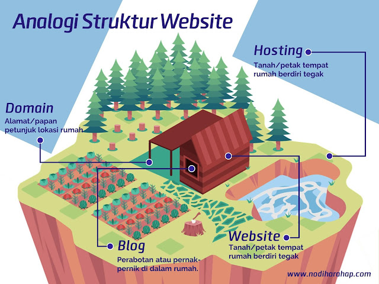

Nama : Arkana Putra Ashshiddiq
Alamat: Jl. Jati Unggul Blok A No 1G
Cita-cita: Jadi orang kaya dan masuk surga
Hobi: Main game
Data Diri
Nama lengkap saya adalah Arkana Putra Ashshiddiq. Saya tinggal di alamat Jl. Jati Unggul Blok A No 1G. Saya memiliki cita-cita untuk menjadi orang kaya dan masuk surga. Salah satu hobi saya adalah main game.
Rangkuman Materi Control Panel Hosting
Control Panel Hosting adalah aplikasi online yang berfungsi untuk mengatur website.
Manfaat Control Panel Hosting:
- Mengelola/Meremote dari jarak jauh
- Dapat mengetahui spesifikasi server hosting yang di sewa
- Mampu mengelolal website dengan mudah
Fitur utama control panel hosting :
- Preference: untuk mengelola email dari domain yang di buuat
- Files: untuk mengelola file yang ada di website
- Mail: untuk mengelola email dari domain yang di buat
- Logs: untuk melihat aktivitas website/monitoring website
- Domain: untuk mengatur domain website
- Database: untuk mengatur data-data yang ada di website
- Software: untuk menginstall aplikasi tambahan yang di butuhkan
Rangkuman Materi Pengantar Hosting
Hosting adalah layanan penyewaan server yang menyediakan sumber daya untuk menyimpan semua file dan data sebuah situs web atau aplikasi agar dapat diakses secara online melalui internet. Layanan ini bisa dianalogikan sebagai "tanah" (hosting) tempat "rumah" (website) berdiri, sementara "alamat" rumah (domain) adalah penunjuk ke sana. Hosting menyimpan berbagai jenis data, termasuk teks, gambar, video, aplikasi, dan database.
Beberapa control panel populer antara lain cPanel, Plesk, dan DirectAdmin. Masing-masing memiliki fitur yang memudahkan pengguna dalam mengelola website dan layanan hosting dengan efisien.
Fitur Hosting:
- Menyimpan data: Hosting berfungsi sebagai tempat penyimpanan utama untuk semua file yang membentuk sebuah situs web, seperti halaman HTML, gambar, skrip, dan basis data.
- Memungkinkan akses internet: Dengan hosting, situs web menjadi dapat diakses oleh siapa saja di seluruh dunia melalui internet setelah mereka mengetikkan nama domain di peramban.
- Mendukung fungsi email profesional: Hosting memungkinkan Anda membuat alamat email khusus dengan domain sendiri (misalnya, nama@domainanda.com), yang meningkatkan kredibilitas bisnis.